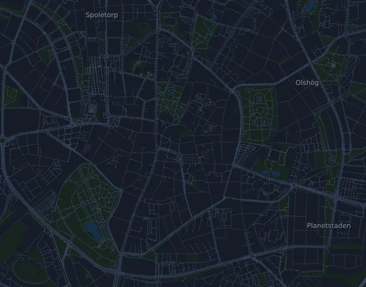

Lundaloppet 10 km
- Distanz
- 10 km
- Höhenmeter
- ↑ 60 m
- Höchster Punkt
- 67 m ü. M.
- Untergrund
- Straße
- Profil
- Leicht wellig
- Verpflegungsstellen
- 1
Höhenprofil
Mit Mila vorbereiten
Mila ist eine Lauf-Coach-App. Nimmst du einen Lauf in deinen Plan auf, plant der Coach deine Wochen bis zum Start nach deiner Form und gibt dir eine Zielzeitprognose und einen Plan für Tempo, Getränke und Verpflegung auf der Strecke.

Der richtige Lauf am richtigen Tag.
Die Strecke

Über die Strecke
Lundaloppet 10 km ist ein Straßenlauf in Lund, Schweden, über 10 km. Die Strecke hat insgesamt 60 Höhenmeter bergauf und 56 bergab, 6,0 m pro km, und ist damit leicht wellig. Der höchste Punkt liegt auf 67 m ü. M., der tiefste auf 31 m.
Der größte Anstieg beginnt bei km 5,1: 25 Höhenmeter auf 2,1 km mit durchschnittlich 1,2 % Steigung, bis auf 67 m.
Der Veranstalter nennt eine Verpflegungsstelle bei km 9,0.
In der Mila-App beschreibt der Coach die Strecke ausführlich in deiner Sprache und plant dein Pacing und deine Verpflegung dafür.
Anstiege
| Beginnt bei | Länge | Höhenmeter | Steigung | Gipfel (m ü. M.) |
|---|---|---|---|---|
| km 5,1 | 2,1 km | 25 m | 1,2 % | 67 |
Vor dem Start
Verpflegungsstellen
| Bei | Angebot |
|---|---|
| km 9,0 | Essen |
Quelle: lundaloppet.se, abgerufen am 24. November 2026
Pace-Tabelle
Lundaloppet 10 km in 40:00 – Pace pro km und Zwischenzeiten
4:00 pro km · km 2,5: 10:00 · km 5: 20:00 · km 7,5: 30:00 · Ziel: 40:00
Lundaloppet 10 km in 50:00 – Pace pro km und Zwischenzeiten
5:00 pro km · km 2,5: 12:30 · km 5: 25:00 · km 7,5: 37:30 · Ziel: 50:00
Lundaloppet 10 km in 1:00:00 – Pace pro km und Zwischenzeiten
6:00 pro km · km 2,5: 15:00 · km 5: 30:00 · km 7,5: 45:00 · Ziel: 1:00:00
Lundaloppet 10 km in 1:10:00 – Pace pro km und Zwischenzeiten
7:00 pro km · km 2,5: 17:30 · km 5: 35:00 · km 7,5: 52:30 · Ziel: 1:10:00
Die Zeiten setzen ein gleichmäßiges Tempo auf der ganzen Strecke voraus. Das ist reine Rechnung, keine Prognose: an Anstiegen, im Gedränge und an Verpflegungsstellen schwankt das Tempo.
Häufige Fragen
Wann findet Lundaloppet 10 km statt?
Das Datum der nächsten Ausgabe steht noch nicht fest. Zuletzt fand der Lauf am 9. Mai 2026 statt.
Wie lang ist Lundaloppet 10 km und wie viele Höhenmeter hat die Strecke?
Der Lauf ist 10 km lang mit 60 Höhenmetern bergauf und 56 bergab. Der höchste Punkt liegt auf 67 m ü. M.
Wie ist die Strecke von Lundaloppet 10 km?
Die Strecke ist leicht wellig, mit durchschnittlich 6,0 Höhenmetern pro km. Sie hat einen Anstieg ab 25 Höhenmetern, bei km 5,1: 25 Höhenmeter auf 2,1 km. Sie führt vom Start zu einem Ziel an einem anderen Ort. Der Untergrund ist Straße.
Gibt es Verpflegungsstellen bei Lundaloppet 10 km?
Ja. Der Veranstalter nennt eine Verpflegungsstelle: km 9,0 (Essen).
Wie teile ich mir Lundaloppet 10 km ein?
Lauf eher mit gleichmäßiger Anstrengung als mit gleichmäßigem Tempo: Lass das Tempo an den Anstiegen sinken, hol es zurück, wo es flacher wird, und halte dich auf den ersten Kilometern zurück. Die größten Anstiege beginnen bei km 5,1. In Mila bekommst du einen Pace-Plan für genau diese Strecke, passend zu deiner Form.
Ähnliche Läufe
Weitere Läufe in der Nähe
- Premiärhalvan 21 km24. April 2027 · Stockholm (Sportgärdet, Gärdet), Schweden
- Premiärmilen 10 km3. April 2027 · Stockholm (Norra Djurgården), Schweden
- Stockholm Halvmaraton 21 km21. August 2027 · Stockholm, Schweden
- Stockholm Marathon 42,2 km29. Mai 2027 · Stockholm, Schweden
- Åre Vertical K 5 km3. August 2027 · Årefjällen, Schweden
- Blodomloppet Malmö 10 km17. Mai 2027 · Malmö, Schweden
Mit Mila vorbereiten
Der richtige Lauf am richtigen Tag.
Die Angaben stammen aus der Streckendatei und den Informationen des Veranstalters. Prüfe Datum, Startzeiten und Regeln beim Veranstalter.
Mila ist nicht mit dem Veranstalter oder den Sponsoren des Laufs verbunden und wird von ihnen weder gesponsert noch empfohlen. Namen und Marken gehören ihren Inhabern. Veranstalter oder Rechteinhaber? Änderung oder Entfernung beantragen